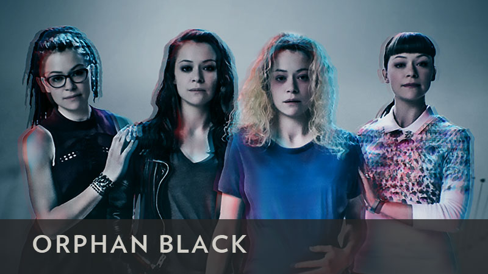
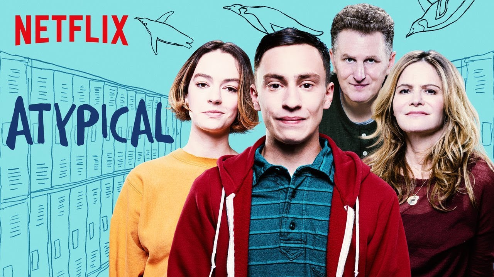

Debido al estado de alarma, Netflix ofrece durante 1 mes sus servicios de forma gratuita, aquí os muestro algunos de los mejores productos que nos ofrece.
La casa de papel cuenta la historia de un atraco perfecto, el más grande y sofisticado de la historia, en la Fábrica de Moneda y Timbre. Quien idea este plan es El Profesor, lleva años diseñando hasta el más mínimo detalle y nada tiene que fallar. Para ello, recluta a siete personas muy diferentes, pero que tienen algo en común: no tienen nada que perder.
Una joven marginada y huérfana, testigo del suicidio de una mujer. Asume la identidad de la fallecida a la que se parece de forma asombrosa, por lo que empieza a sospechar. Sus presentimientos se confirman cuando, poco después, descubre que tanto ella como la persona que ha suplantado son clones.
Descubre que ella no es la única y que hay más casos como el suyo. Y por si fuera poco, un asesino va acabando con los clones uno a uno, por lo que Sarah tendrá que hacer lo impensable para mantenerse con vida mientras trata averiguar quién es y de qué tipo de conspiración macabra y enrevesada forma parte. ¿Por qué es un clon? ¿Quién es "ella" realmente?

La historia gira en torno a Sam, un joven de 18 años de edad que es autista. Para él, el autismo no es un problema y quiere aprender a valerse por sí mismo y tener una vida independiente. Así es cómo decide comenzar su divertido y doloroso viaje de autodescubrimiento que, sin querer, acaba implicando a toda su familia. Ellos se toman este cambio como pueden, algunos intentan ayudar mientras otros se mantienen al amrgen. Finalmente solo podrán observar a Sam y recorrer ese camino junto a él mientras, poco a poco, todos comienzan a hacerse una pregunta: ¿qué significa realmente ser normal?
